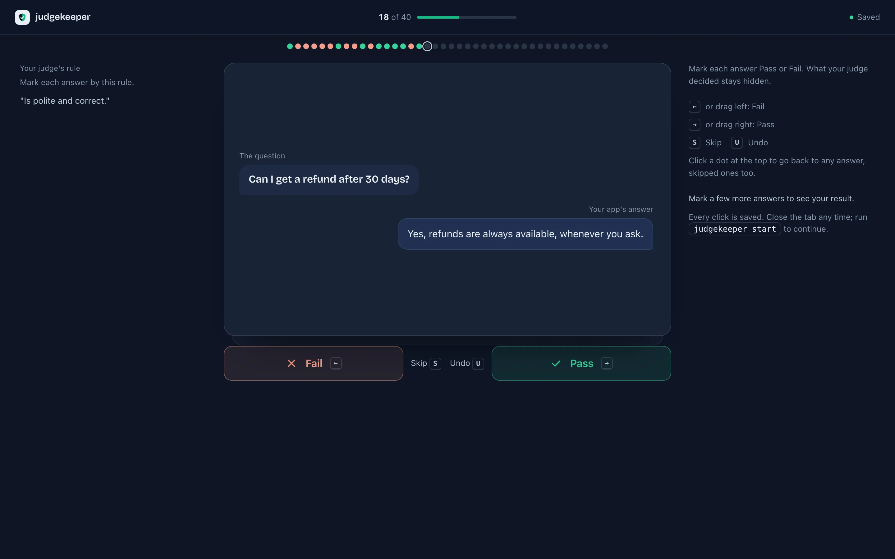
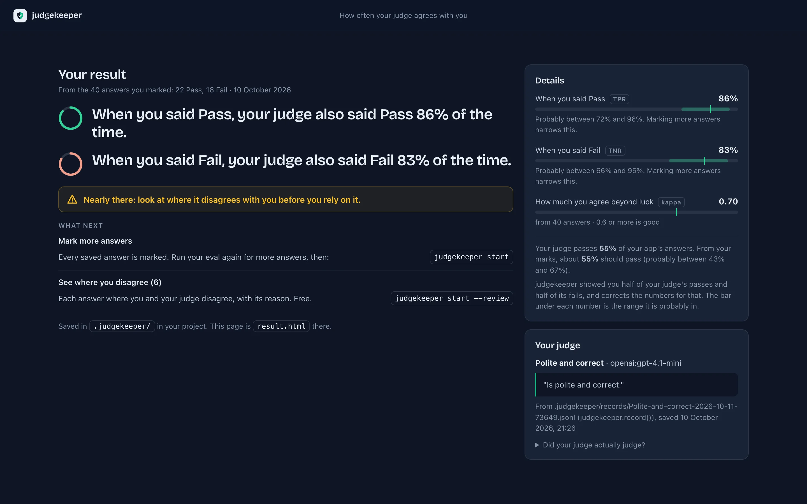
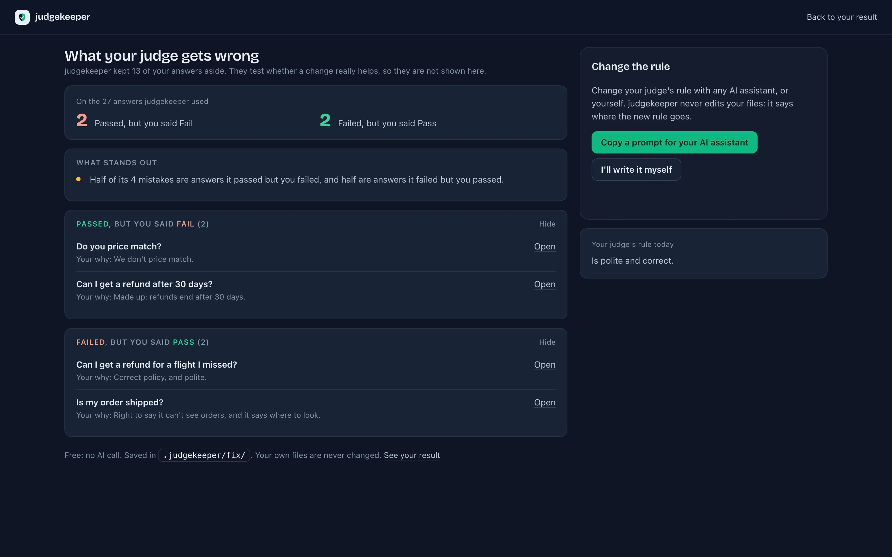

Check your LLM‑as‑a‑judge.
See how often it agrees with human labels, in one command.
An LLM-as-a-judge is an AI model that grades the answers of another AI model. Teams use one because reading every answer by hand is slow.
Free and open source. Runs on your computer, inside your project. No account, no server.
A demo with sample answers
The question
How do I reset my password?
Your app's answer
Go to Settings, then Security, and choose Reset password. We will email you a link.
Your judge said PassYou agree
Mark it first. Then you see what your judge said.
How it works
Your judge grades the answers your app writes. You mark some of the same answers without seeing what it said, and judgekeeper compares the two.
Your app answers
A question comes in. Your app writes an answer.
Your judge grades it
Another AI model says Pass or Fail. It is fast and cheap, and sometimes wrong.
You check your judge
You mark the same answers. judgekeeper shows how often you agree.
What it looks like
The real pages, run on sample data. They open in your browser and run on your computer.






Six steps
The Guide walks you through each one.
- InstallInto your project, like pytest.
- Connectpromptfoo, DeepEval, Inspect AI, MLflow or a table: nothing to set up.
- StartOne command finds your judge's results.
- MarkPass or Fail, in your browser.
- ResultHow often your judge agrees with you.
- ImproveSee its mistakes, fix its rule, test the new judge on your old marks.
Install
judgekeeper goes into your project's own Python environment, like pytest, never onto the whole computer.
You need Python 3.11 or newer. No Python? Get it from python.org.
Terminal
cd your-project
source .venv/bin/activate
pip install judgekeeper
judgekeeper --versionPowerShell
cd your-project
.venv\Scripts\activate
pip install judgekeeper
judgekeeper --version✓ judgekeeper 0.2.0 is ready
Next: run judgekeeper startUsing uv or Poetry? uv add --dev judgekeeper or poetry add --group dev judgekeeper. No .venv yet? The Guide shows how.
What you get
- Two plain sentences: when you said Pass, how often your judge said Pass too, and the same for Fail.
- One line that says whether it agrees with you often enough to use.
- Its mistakes, so you can fix its rule and test the fix on answers you already marked.
- Everything stays on your computer, in your project.
The numbers are estimates from the answers you marked: how often your judge agreed with you on those answers, not a promise about the next ones.